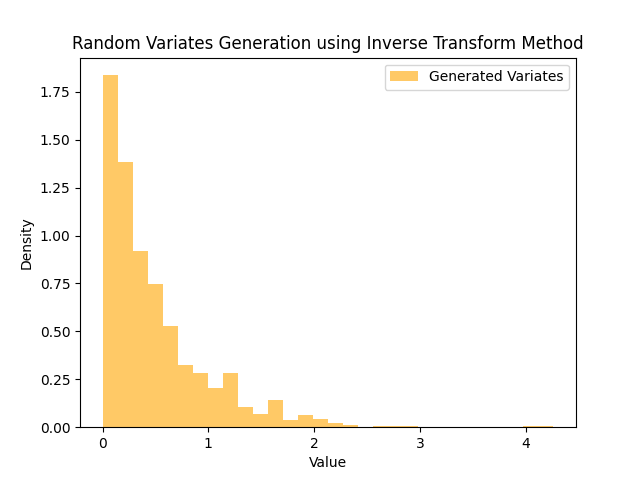

Introduction
The generation of random variates is a critical aspect of many statistical simulations and modeling scenarios. This process involves algorithms designed to produce numbers with specified probability distributions. Exploring the algorithms for random variates generation unveils the methods that underpin statistical simulations, providing a bridge between theoretical distributions and practical applications.
Visualization of Random Variates Generation:
The accompanying image depicts the result of applying the Inverse Transform Method to generate random variates from an exponential distribution. The histogram showcases the distribution of these generated variates, offering a visual representation of the algorithm's effectiveness in approximating the desired distribution.
Practical Significance:
Understanding algorithms for random variates generation is crucial in fields such as simulation, finance, and scientific research. Accurate and efficient generation of random variates enables the modeling and analysis of complex systems, contributing to advancements in various domains. Different distributions may require specific algorithms, and the choice of method depends on factors like efficiency, accuracy, and applicability.
Random Variates Generation Plot:
Conclusion:
Exploring algorithms for random variates generation provides valuable insights into the foundational principles of statistical simulations. As we continue to advance in computational methodologies, a nuanced understanding of these algorithms becomes increasingly relevant for researchers and practitioners working with data-driven models and simulations.